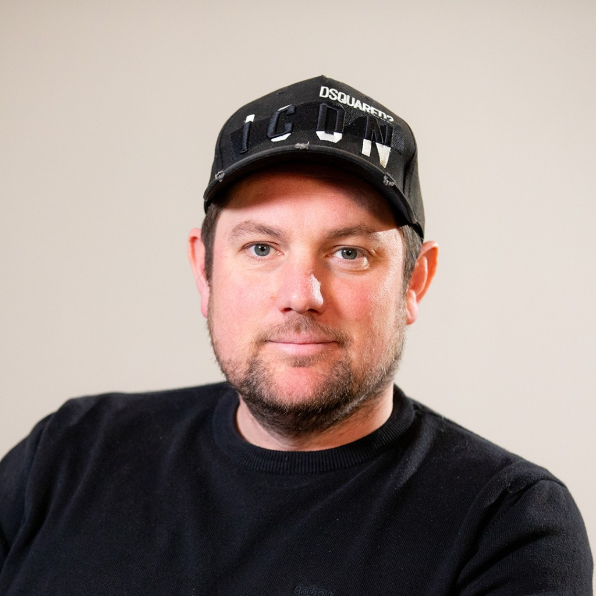

Most teams going in-house with AI get the speed. They don't get the quality. That gap is what we close.
Book a conversationFast output is easy now. Consistent, on-brand, genuinely good output is something else entirely.
When AI doesn't know your brand at a deep level, it shows. The tone drifts. The work looks generic. The team spends more time fixing than creating.
That's not a prompting problem. It's a context problem. And most teams don't know that until they're already in it.
"We prompt the same way every time. The output is never quite consistent."
"The work comes out fine. It just doesn't look like us."
"We're producing more than ever. We're not sure any of it is working."

I've spent fifteen years helping brands figure out what makes them distinct, then making sure everything they put out reflects that. That's still the job. The tools have just changed.
What I keep seeing now is teams who've gone in-house with AI and hit the same wall. The output is fast. It's just not theirs. Not because the tools are wrong, but because nobody's put the right thinking in.
Creative in the Loop is how I fix that. I come in, build the creative foundation your engine needs, and stay close enough to make sure the quality holds as you scale.
If that sounds like what you're missing, let's talk.
Your brand strategy. Your voice. Your visual identity. We take all of it and structure it into something AI can actually work from.
Then we stay in. Not to hold your hand. To keep the quality where it needs to be as you scale.
We find every gap between what your brand is and what your engine knows about it.
We produce the creative context your engine needs and configure it until the output is consistently good.
You produce. We stay in the loop. Available through Flexi-Design when you need us.
After phases one and two your team has everything it needs to produce with confidence.
Phase three keeps it sharp. We don't hand over and disappear. We transition into a support role that scales with you.
You've got the tools. You need the thinking built in before you scale.
Your clients are asking about AI. We give you something real to offer them.
Salo is a strategic design studio with over a decade of work across agencies and brands in the UK and US.
The clients coming back to us aren't asking for AI training. They're asking for the creative judgement that makes the difference between output that's acceptable and output that's actually good.
That's what this is.
Learn more about Salo →We're working with a small number of teams right now. Book a short call and we'll find out quickly whether this makes sense.
Book a callPrefer to email first? hello@salo.uk